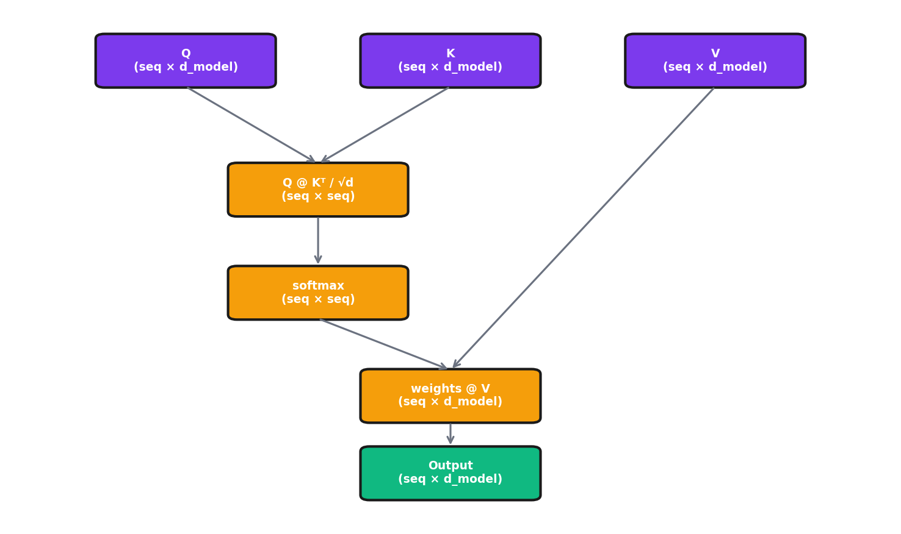

Deep Dive: Transformer Architecture¶
Extends Module 8: Natural Language Processing
Introduction¶
In Module 8, we learned that transformers use self-attention to process sequences. We covered the high-level concepts of Query, Key, Value and the attention formula.
This deep dive goes deeper. We'll trace through the exact matrix dimensions at each step, see exactly where the learnable parameters live, and build a complete transformer from scratch in PyTorch.
By the end, you'll understand not just what transformers do, but how they do it—down to the individual matrix operations.
What parameters learn: Token embeddings learn dense representations where similar words cluster together. Attention projections (W_Q, W_K, W_V) learn relevance between tokens—W_Q learns what tokens "look for," W_K what they "offer," W_V what information to pass. FFNs appear to store factual knowledge as distributed key-value memories. Layer norms stabilize training.
Where Parameters Live in a Transformer¶
Understanding where the learnable parameters actually reside is crucial for understanding what the model "learns" during training.
Parameter Overview¶
For a transformer with:
- vocab_size = 30,000 (vocabulary)
- d_model = 512 (model dimension)
- n_heads = 8 (attention heads)
- d_k = d_v = 64 (dimension per head = d_model / n_heads)
- d_ff = 2048 (feedforward hidden dimension, typically 4× d_model)
- n_layers = 6 (number of transformer blocks)
- max_seq_len = 512 (maximum sequence length)
Why 4× expansion in FFN? Largely empirical—it worked well in the original paper. The expansion provides "intermediate reasoning space." Too small (2×) limits expressivity; too large (8×) adds parameters with diminishing returns. Some efficient transformers use 2-2.67×; the ratio isn't sacred if you have specific constraints.
Token Embedding Matrix¶
Shape: (vocab_size, d_model) = (30000, 512)
Parameters: 15,360,000
What it learns: A dense vector representation for each token in the vocabulary. This is the "lookup table" that converts token IDs to continuous vectors.
How similar embeddings emerge: Word relationships emerge from the training objective (distributional hypothesis). Tokens in similar contexts ("cat" and "dog" both appear in "the ___ ran across the yard") get similar embeddings. The model learns they're interchangeable in many contexts. Subtle relationships emerge too: "king" – "man" + "woman" ≈ "queen." None is programmed—it falls out of optimizing prediction accuracy.
self.token_embedding = nn.Embedding(
num_embeddings=vocab_size, # 30,000
embedding_dim=d_model # 512
)
# Weight shape: (30000, 512)
Numerical Example: Embedding Lookup
import torch import torch.nn as nn torch.manual_seed(42) embedding = nn.Embedding(num_embeddings=10, embedding_dim=4) # Look up token IDs [2, 5, 7] token_ids = torch.tensor([2, 5, 7]) output = embedding(token_ids) print("Token ID 2 →", output[0].detach().numpy().round(4)) print("Verify: embedding.weight[2] →", embedding.weight[2].detach().numpy().round(4))Output:
Token ID 2 → [-0.7521 1.6487 -0.3925 -1.4036] Verify: embedding.weight[2] → [-0.7521 1.6487 -0.3925 -1.4036]Interpretation: Embedding is just table lookup—token ID 2 retrieves row 2 of the weight matrix. Each token gets its own learned vector. Similar tokens (learned during training) will have similar vectors.
Source:
slide_computations/deep_dive_transformer_examples.py-demo_embedding_lookup()
Positional Encoding / Embedding¶
Sinusoidal (Original Transformer): No learnable parameters—computed deterministically
Learned Positional Embedding:
- Shape: (max_seq_len, d_model) = (512, 512)
- Parameters: 262,144
# Learned positional embeddings
self.pos_embedding = nn.Embedding(
num_embeddings=max_seq_len, # 512
embedding_dim=d_model # 512
)
Attention Layer Parameters (Per Layer)¶
Each attention layer has four weight matrices:
| Matrix | Shape | Parameters | Purpose |
|---|---|---|---|
| W_Q | (d_model, d_model) |
512 × 512 = 262,144 | Projects input to queries |
| W_K | (d_model, d_model) |
512 × 512 = 262,144 | Projects input to keys |
| W_V | (d_model, d_model) |
512 × 512 = 262,144 | Projects input to values |
| W_O | (d_model, d_model) |
512 × 512 = 262,144 | Projects concatenated heads to output |
| Biases | 4 × (d_model) |
4 × 512 = 2,048 | One bias per projection |
Total per attention layer: ~1,050,624 parameters
Key insight: Even though we have 8 heads, the total parameter count is the same as if we had one big head. The "heads" are created by reshaping, not by adding parameters.
Why multiple heads help: They enable attending to different relationships simultaneously—syntactic, semantic, positional. Research finds heads that specialize: one attends to grammatical antecedents, another to adjacent tokens. This specialization emerges during training. Trade-off: each head has smaller d_k, but specialization benefits outweigh capacity reduction.
Feed-Forward Network (Per Layer)¶
The FFN applies two linear transformations with a non-linearity:
| Matrix | Shape | Parameters | Purpose |
|---|---|---|---|
| W_1 | (d_model, d_ff) |
512 × 2048 = 1,048,576 | Expand to higher dimension |
| b_1 | (d_ff) |
2,048 | Bias for expansion |
| W_2 | (d_ff, d_model) |
2048 × 512 = 1,048,576 | Contract back to model dimension |
| b_2 | (d_model) |
512 | Bias for contraction |
Total per FFN: ~2,099,712 parameters
FFN as knowledge storage: Research supports this hypothesis. Specific FFN neurons activate for specific concepts ("The capital of France is ___" triggers neurons contributing "Paris"). Researchers have edited factual knowledge by modifying FFN weights. Attention handles "routing" (context-dependent); FFN handles fixed transformations. Fixed parameters suit stable facts; dynamic computation suits context-dependent processing.
Why 4× expansion works—the "committee of specialists" intuition: Think of the expanded dimension as a committee of 2,048 specialists, each detecting a specific pattern. When input x arrives, it "consults" all specialists (W_1 multiplication), but ReLU/GELU silences those who don't recognize the pattern (negative activations → zero). Typically only 30-50% of neurons activate for any given input—this sparsity means different inputs engage different specialist subsets. The contraction (W_2) then combines the active specialists' opinions. More specialists (larger d_ff) means finer-grained pattern detection, but with diminishing returns and increased compute cost.
Numerical Example: FFN Forward Pass
import torch import torch.nn as nn torch.manual_seed(42) d_model, d_ff = 4, 16 # 4× expansion W1 = torch.randn(d_ff, d_model) * 0.5 W2 = torch.randn(d_model, d_ff) * 0.5 x = torch.tensor([1.0, -0.5, 0.8, 0.2]) # Step 1: Expand h1 = x @ W1.T print(f"After W1 (16 dims): {h1[:8].numpy().round(3)}...") # Step 2: ReLU h2 = torch.relu(h1) print(f"After ReLU: {(h2 > 0).sum().item()}/16 neurons active") # Step 3: Contract output = h2 @ W2.T print(f"Output (4 dims): {output.numpy().round(3)}")Output:
After W1 (16 dims): [ 0.741 0.47 -1.086 -0.455 0.706 -0.16 0.693 -0.141]... After ReLU: 5/16 neurons active Output (4 dims): [ 0.575 0.434 -0.103 -0.405]Interpretation: ReLU zeros out 11 of 16 neurons (~69%)—only 5 "specialists" recognized this input. Different inputs would activate different subsets. The sparse activation means each input engages a different combination of learned patterns stored in W_2.
Source:
slide_computations/deep_dive_transformer_examples.py-demo_ffn_forward()
Layer Normalization (Per Layer)¶
Each transformer block typically has 2 layer norms:
| Component | Shape | Parameters |
|---|---|---|
| Scale (γ) | (d_model) |
512 |
| Shift (β) | (d_model) |
512 |
Total per layer norm: 1,024 parameters Total per transformer block: 2,048 parameters (2 layer norms)
Why layer norm matters: Without it, activations grow/shrink exponentially through layers—causing gradient explosion/vanishing. Layer norm keeps activations stable regardless of depth. The learned γ and β parameters let the model recover useful mean/variance. Appears twice per block (before attention, before FFN) because both operations can distort statistics.
Numerical Example: Layer Normalization
import torch x = torch.tensor([[10.0, 20.0, 30.0, 40.0]]) # Varying magnitudes print(f"Input: {x[0].numpy()}, mean={x.mean():.1f}, std={x.std():.1f}") # Normalize to mean=0, std=1 mean = x.mean(dim=-1, keepdim=True) std = torch.sqrt(x.var(dim=-1, unbiased=False, keepdim=True) + 1e-6) x_norm = (x - mean) / std print(f"Normalized: {x_norm[0].numpy().round(4)}") print(f"New mean={x_norm.mean():.6f}, std={x_norm.std():.4f}") # Apply learned scale (γ) and shift (β) gamma = torch.tensor([1.0, 2.0, 0.5, 1.5]) beta = torch.tensor([0.0, 1.0, -0.5, 0.0]) output = gamma * x_norm + beta print(f"After γ, β: {output[0].numpy().round(4)}")Output:
Input: [10. 20. 30. 40.], mean=25.0, std=11.2 Normalized: [-1.3416 -0.4472 0.4472 1.3416] New mean=0.000000, std=1.0000 After γ, β: [-1.3416 0.1056 -0.2764 2.0125]Interpretation: Input with mean 25 and std 11 gets normalized to mean 0 and std 1. The learned γ and β then rescale—dimension 1 gets doubled (γ=2) and shifted up (β=1), dimension 2 gets halved (γ=0.5) and shifted down (β=-0.5). This lets the model learn which dimensions need larger/smaller variance.
Source:
slide_computations/deep_dive_transformer_examples.py-demo_layer_norm()
Parameter Count Summary¶
| Component | Count | Parameters Each | Total |
|---|---|---|---|
| Token Embedding | 1 | 15,360,000 | 15,360,000 |
| Positional Embedding | 1 | 262,144 | 262,144 |
| Attention Layers | 6 | ~1,050,624 | ~6,303,744 |
| FFN Layers | 6 | ~2,099,712 | ~12,598,272 |
| Layer Norms | 12 | 1,024 | 12,288 |
| Output Head | 1 | 15,360,000 | 15,360,000* |
Total: ~50 million parameters (with tied embeddings: ~35 million)
*Often tied with token embedding
What Each Component Does (The "Why")¶
Why Positional Encoding?¶
The Problem: Self-attention is permutation-invariant
Without position information, these sentences would be identical to the model: - "Dog bites man" - "Man bites dog" - "Bites man dog"
The attention mechanism only cares about what tokens are present and their relationships, not where they appear.
Sinusoidal Positional Encoding
Why sine and cosine?
- Bounded range: Values stay in [-1, 1], preventing position from dominating
- Unique per position: Each position gets a unique encoding
- Relative positions via linear transformation: For any fixed offset k, \(PE_{pos+k}\) can be represented as a linear function of \(PE_{pos}\)
- Generalizes to longer sequences: Works for sequences longer than seen during training
The "clock hands" intuition: Each dimension pair (sin, cos) is like a clock hand rotating at a different speed. Dimension 0-1 rotates quickly (completes a full cycle in ~6 positions), while dimension 510-511 rotates extremely slowly (cycle length ~10,000 positions). Position 0 has all clock hands at the same starting angle. As position increases, fast hands spin rapidly while slow hands barely move. Any position creates a unique combination of hand angles—like reading a clock with 256 hands of different speeds. This multi-frequency encoding lets the model learn both local patterns (via fast-changing dimensions) and global structure (via slow-changing dimensions).
Numerical Example: Positional Encoding Values
import numpy as np def get_pe(pos, d_model=8): pe = np.zeros(d_model) for i in range(d_model): if i % 2 == 0: pe[i] = np.sin(pos / (10000 ** (i / d_model))) else: pe[i] = np.cos(pos / (10000 ** ((i-1) / d_model))) return pe for pos in [0, 1, 10, 100]: print(f"Position {pos:3d}: {get_pe(pos).round(4)}")Output:
Position 0: [ 0. 1. 0. 1. 0. 1. 0. 1. ] Position 1: [ 0.8415 0.5403 0.0998 0.995 0.01 1. 0.001 1. ] Position 10: [-0.544 -0.8391 0.8415 0.5403 0.0998 0.995 0.01 1. ] Position 100: [-0.5064 0.8623 -0.544 -0.8391 0.8415 0.5403 0.0998 0.995 ]Interpretation: Position 0 has a distinctive [0,1,0,1,...] pattern. Each position creates a unique encoding. Low dimensions (left) change rapidly—notice positions 1 and 10 have very different dim0 values. High dimensions (right) change slowly—dim6-7 are nearly identical for positions 0, 1, and 10. All values stay bounded in [-1, 1].
Source:
slide_computations/deep_dive_transformer_examples.py-demo_positional_encoding()
Why learned embeddings over sinusoidal? Sinusoidal generalizes to arbitrary lengths, but fixed context windows make this rarely matter in practice. Learned embeddings perform slightly better and can capture task-specific patterns (code structure, conversation turns). Neither extrapolates well beyond training lengths. Modern architectures use relative positional encodings (RoPE, ALiBi) that generalize better via relative distances.
Why Self-Attention?¶
Advantage 1: O(1) Path Length
To connect position 1 to position 100: - RNN: Information must pass through 99 sequential steps - Attention: Direct connection in one step
This solves the long-range dependency problem.
Advantage 2: Parallelization
- RNN: Must process sequentially (h₁ → h₂ → h₃ → ...)
- Attention: All positions computed simultaneously
This enables massive speedups on GPUs.
Advantage 3: Dynamic, Content-Dependent Connections
RNNs have fixed connections (previous → current). Attention weights are computed based on the content of the sequence:
"The cat sat on the mat because it was soft"
↑
"it" attends strongly to "mat"
"The cat sat on the mat because it was tired"
↑
"it" attends strongly to "cat"
Same architecture, different attention patterns based on meaning.
The "library search" analogy made concrete: Imagine processing "The capital of France is ___": - The blank position generates a Query: "I need information about capitals and France" - "France" offers a Key: "I have information about a European country" - "France" also has a Value: the actual semantic content (geography, culture, language facts) - "capital" offers a Key: "I relate to cities and governance" - The Query-Key comparison finds high similarity between the blank's query and "France"/"capital" keys - The attention weights then retrieve Values from those high-similarity positions
This is why Q, K, V are separate: the question you ask (Q) may differ from what you advertise (K), which may differ from what you actually contribute (V). A pronoun like "it" asks "what noun am I referring to?" (Q), advertises "I'm a pronoun needing resolution" (K), and contributes "third-person singular reference" (V).
Learning contextual attention: Entirely learned during training via backpropagation. When the model predicts incorrectly (attended to "mat" instead of "cat"), gradients adjust W_Q, W_K, W_V so "it" generates queries with higher similarity to "cat" when context suggests animacy. Different heads learn different aspects (proximity, syntax, semantics), enabling sophisticated disambiguation.
Why the FFN (MLP)?¶
The attention mechanism is powerful but has limitations:
- Attention is linear (after softmax): Just weighted sums of values
- Attention is the same for all positions: The W_Q, W_K, W_V matrices don't change per position
What FFN provides:
Non-linearity: The ReLU (or GELU) activation adds non-linear transformations that attention alone cannot provide.
Position-wise processing: Each position gets the same transformation, but independently.
Memory/Knowledge storage: Research suggests FFN layers store factual knowledge. When you ask "The capital of France is ___", the FFN layers help retrieve "Paris."
Why the expansion to 4×?
The expansion (512 → 2048 → 512) creates a "bottleneck" architecture: - Expansion: Project to higher dimension, allowing richer intermediate representations - Non-linearity: Apply ReLU/GELU - Contraction: Compress back to model dimension
FFN as key-value memory: W_1 rows are "keys"—patterns to match. Input compared via matrix multiplication; GELU sparsifies activations. W_2 stores "values" retrieved when keys match. Computing FFN(x) = GELU(x W_1) W_2 is: find matching keys, weight by match strength, retrieve values. Ablating specific W_2 rows removes specific facts—strong evidence for this interpretation.
Self-Attention Step-by-Step with Matrix Dimensions¶
Let's trace through self-attention with concrete numbers:
Setup:
- batch_size (B) = 2
- seq_len (T) = 4
- d_model = 8
- n_heads = 2
- d_k = d_v = 4 (= d_model / n_heads)
Step 1: Input¶
X shape: (B, T, d_model) = (2, 4, 8)
This is 2 sequences, each with 4 tokens, each token represented by 8 dimensions.
Step 2: Linear Projections¶
Weight matrices (learnable parameters):
- W_Q: (8, 8)
- W_K: (8, 8)
- W_V: (8, 8)
Compute Q, K, V:
Q = X @ W_Q: (2, 4, 8) @ (8, 8) → (2, 4, 8)
K = X @ W_K: (2, 4, 8) @ (8, 8) → (2, 4, 8)
V = X @ W_V: (2, 4, 8) @ (8, 8) → (2, 4, 8)
Step 3: Reshape for Multi-Head Attention¶
We split d_model=8 into n_heads=2 heads, each with d_k=4 dimensions.
Reshape: (B, T, d_model) → (B, T, n_heads, d_k) → (B, n_heads, T, d_k)
Q: (2, 4, 8) → (2, 4, 2, 4) → (2, 2, 4, 4)
K: (2, 4, 8) → (2, 4, 2, 4) → (2, 2, 4, 4)
V: (2, 4, 8) → (2, 4, 2, 4) → (2, 2, 4, 4)
Now we have: - 2 batches - 2 heads per batch - 4 tokens per head - 4 dimensions per token
Why multiple heads?—The "committee of experts" analogy: Each head operates on a different d_k-dimensional subspace of the embedding. With d_model=512 and 8 heads, each head sees only 64 dimensions—a different "view" of the data. One head might specialize in syntactic relationships (subject-verb agreement), another in semantic similarity (synonyms, related concepts), another in positional patterns (attending to adjacent tokens). This emerges naturally from training: different random initializations + gradient descent = different specializations. The output projection W_O then combines these diverse perspectives. Single-head attention with d_k=512 could theoretically learn the same patterns, but multi-head makes it easier—each head has a simpler job.
Numerical Example: Multi-Head Reshape
import torch # Create input: 1 batch, 4 tokens, 8 dimensions x = torch.zeros(1, 4, 8) for t in range(4): for d in range(8): x[0, t, d] = t + d * 0.1 # Recognizable pattern print(f"Input shape: {tuple(x.shape)} (batch, seq, d_model)") print(f"Token 0: {x[0, 0].numpy().round(1)}") # Reshape for 2 heads x_reshaped = x.view(1, 4, 2, 4).transpose(1, 2) print(f"\nAfter reshape: {tuple(x_reshaped.shape)} (batch, heads, seq, d_head)") print(f"Head 0, Token 0: {x_reshaped[0, 0, 0].numpy().round(1)}") print(f"Head 1, Token 0: {x_reshaped[0, 1, 0].numpy().round(1)}")Output:
Input shape: (1, 4, 8) (batch, seq, d_model) Token 0: [0. 0.1 0.2 0.3 0.4 0.5 0.6 0.7] After reshape: (1, 2, 4, 4) (batch, heads, seq, d_head) Head 0, Token 0: [0. 0.1 0.2 0.3] Head 1, Token 0: [0.4 0.5 0.6 0.7]Interpretation: The 8-dimensional embedding gets split: Head 0 sees dims 0-3, Head 1 sees dims 4-7. Each head processes a different "view" of each token. No new parameters are created—it's pure reshaping. The heads then compute attention independently on their respective subspaces.
Source:
slide_computations/deep_dive_transformer_examples.py-demo_multihead_reshape()
Step 4: Compute Attention Scores¶
Formula: scores = Q @ K^T / √d_k
The result (2, 2, 4, 4) means: for each batch, for each head, we have a 4×4 matrix where entry (i,j) is how much token i attends to token j.
Scale by √d_k = √4 = 2:
This prevents the dot products from growing too large (which would make softmax saturate).
Without √d_k scaling: Dot products grow with d_k, pushing softmax into saturated regions (nearly one-hot). Problems: gradients vanish (softmax derivative approaches zero), attention becomes too "sharp" (loses weighted combination), model becomes brittle (small changes flip attention). Scaling maintains consistent softmax behavior regardless of dimensionality.
What saturation looks like: Consider attention scores [8, 4, 2, 1] (typical for d_k=64). Softmax gives [0.98, 0.02, 0.00, 0.00]—the model attends almost entirely to the first token and ignores the rest. Now scale by √64=8: scores become [1, 0.5, 0.25, 0.125]. Softmax now gives [0.40, 0.24, 0.19, 0.17]—a much smoother distribution where all tokens contribute. The smooth version allows nuanced weighted combinations and provides meaningful gradients for all positions. The saturated version essentially makes attention a hard selection, losing the benefits of soft attention.
Numerical Example: Scaling Effect on Softmax
import numpy as np def softmax(x): exp_x = np.exp(x - np.max(x)) return exp_x / exp_x.sum() # Typical dot product magnitudes for d_k=64 and d_k=512 scores_64 = np.array([8.0, 4.0, 2.0, 1.0]) scores_512 = scores_64 * np.sqrt(512/64) # Scale up for larger d_k print("WITHOUT scaling:") print(f" d_k=64: {np.round(softmax(scores_64), 4)}") print(f" d_k=512: {np.round(softmax(scores_512), 4)}") print("\nWITH scaling by sqrt(d_k):") print(f" d_k=64: {np.round(softmax(scores_64 / np.sqrt(64)), 4)}") print(f" d_k=512: {np.round(softmax(scores_512 / np.sqrt(512)), 4)}")Output:
WITHOUT scaling: d_k=64: [0.9788 0.0179 0.0024 0.0009] d_k=512: [1. 0. 0. 0.] WITH scaling by sqrt(d_k): d_k=64: [0.4007 0.243 0.1893 0.167 ] d_k=512: [0.4007 0.243 0.1893 0.167 ]Interpretation: Without scaling, d_k=512 produces a nearly one-hot distribution—the model attends only to token 0. With scaling, both d_k values produce identical smooth distributions. This consistency across embedding dimensions is why scaling by √d_k is critical.
Source:
slide_computations/deep_dive_transformer_examples.py-demo_scaling_effect()
Step 5: Apply Softmax¶
Each row now sums to 1:
Example attention matrix for one head:
Token0 Token1 Token2 Token3
Token0: 0.4 0.3 0.2 0.1 = 1.0
Token1: 0.1 0.5 0.3 0.1 = 1.0
Token2: 0.2 0.2 0.4 0.2 = 1.0
Token3: 0.1 0.1 0.2 0.6 = 1.0
Numerical Example: Attention Scores Step by Step
import numpy as np # 4 tokens, d_k=4 Q = np.array([[1,0,1,0], [0.5,0.5,0,1], [0,1,0.5,0.5], [1,1,0,0]], dtype=float) K = np.array([[1,0,0.5,0.5], [0,1,0,1], [0.5,0.5,1,0], [0,0,1,1]], dtype=float) # Raw scores: Q @ K^T scores = Q @ K.T print("Raw scores (Q @ K^T):") print(scores.round(2)) # Scale by sqrt(d_k) scaled = scores / np.sqrt(4) # Softmax each row def softmax_rows(x): exp_x = np.exp(x - np.max(x, axis=1, keepdims=True)) return exp_x / exp_x.sum(axis=1, keepdims=True) attn = softmax_rows(scaled) print("\nAttention weights (softmax of scaled scores):") print(attn.round(3))Output:
Raw scores (Q @ K^T): [[1.5 0. 1.5 1. ] [1. 1.5 0.5 1. ] [0.5 1.5 1. 1. ] [1. 1. 1. 0. ]] Attention weights (softmax of scaled scores): [[0.308 0.145 0.308 0.24 ] [0.246 0.316 0.192 0.246] [0.192 0.316 0.246 0.246] [0.277 0.277 0.277 0.168]]Interpretation: Row i shows how much token i attends to each token. Token 0 attends equally (0.308) to tokens 0 and 2. Token 1 attends most (0.316) to token 1. Each row sums to 1—it's a probability distribution over which tokens to attend to.
Source:
slide_computations/deep_dive_transformer_examples.py-demo_attention_scores()
Step 6: Apply Attention to Values¶
Each token's output is now a weighted sum of all value vectors.
Step 7: Concatenate Heads¶
Reshape: (B, n_heads, T, d_k) → (B, T, n_heads, d_k) → (B, T, d_model)
Step 8: Output Projection¶
Final output has the same shape as input: (2, 4, 8).
Stacking limits: Shape preservation enables many layers (GPT-3 has 96), but practical limits exist: compute/memory scale linearly, training stability degrades, performance shows diminishing returns (12→24 helps more than 96→192), and latency matters for real-time applications. For fixed compute budgets, there's an optimal balance between depth, width, and data.
Dimension Flow Diagram¶

Reading the diagram: This flowchart shows the first half of attention—from input to Q/K/V projections. Blue boxes represent data tensors that flow through the network: embeddings arrive with shape (seq × d_model), get positional encoding added, then become X. The key insight is the three-way split: X passes through three separate learnable projection matrices (red hatched boxes labeled W_Q, W_K, W_V), each transforming the same input into a different representation. The "Learnable!" annotation emphasizes these are the trained parameters—the attention weights themselves are computed dynamically. Purple boxes show the outputs: Q (queries—what each token is looking for), K (keys—what each token offers to match against), and V (values—the actual information to pass along). All three maintain the same (seq × d_model) shape.

Reading the diagram: This flowchart continues from Q/K/V to the final output. Purple boxes (Q, K, V) are the inputs from the previous diagram. The orange boxes show the computation steps: first, Q and K interact via matrix multiplication (Q @ K^T) and scaling by √d to produce attention scores with shape (seq × seq)—a matrix where entry (i,j) indicates how much token i should attend to token j. Softmax normalizes each row to sum to 1, creating a probability distribution. Notice V "waits" on the side—it doesn't participate until after softmax. Then the attention weights multiply V (weights @ V), creating a weighted combination of value vectors for each position. The green output box has the same shape as the input (seq × d_model), showing how attention transforms representations while preserving dimensions. This shape preservation enables stacking many transformer layers.
From-Scratch PyTorch Implementation¶
Self-Attention Module¶
import torch
import torch.nn as nn
import torch.nn.functional as F
import math
class MultiHeadSelfAttention(nn.Module):
"""Multi-head self-attention from scratch."""
def __init__(self, d_model: int, n_heads: int, dropout: float = 0.1):
super().__init__()
assert d_model % n_heads == 0, "d_model must be divisible by n_heads"
self.d_model = d_model
self.n_heads = n_heads
self.d_k = d_model // n_heads
# Learnable projection matrices
self.W_Q = nn.Linear(d_model, d_model)
self.W_K = nn.Linear(d_model, d_model)
self.W_V = nn.Linear(d_model, d_model)
self.W_O = nn.Linear(d_model, d_model)
self.dropout = nn.Dropout(dropout)
def forward(self, x: torch.Tensor, mask: torch.Tensor = None) -> torch.Tensor:
batch_size, seq_len, _ = x.shape
# Step 1: Linear projections
Q = self.W_Q(x)
K = self.W_K(x)
V = self.W_V(x)
# Step 2: Reshape for multi-head attention
Q = Q.view(batch_size, seq_len, self.n_heads, self.d_k).transpose(1, 2)
K = K.view(batch_size, seq_len, self.n_heads, self.d_k).transpose(1, 2)
V = V.view(batch_size, seq_len, self.n_heads, self.d_k).transpose(1, 2)
# Step 3: Compute attention scores
scores = torch.matmul(Q, K.transpose(-2, -1)) / math.sqrt(self.d_k)
# Step 4: Apply mask (optional)
if mask is not None:
scores = scores.masked_fill(mask == 0, float('-inf'))
# Step 5: Softmax
attn_weights = F.softmax(scores, dim=-1)
attn_weights = self.dropout(attn_weights)
# Step 6: Apply attention to values
context = torch.matmul(attn_weights, V)
# Step 7: Concatenate heads
context = context.transpose(1, 2).contiguous()
context = context.view(batch_size, seq_len, self.d_model)
# Step 8: Output projection
output = self.W_O(context)
return output
Feed-Forward Network¶
class FeedForward(nn.Module):
"""Position-wise feed-forward network."""
def __init__(self, d_model: int, d_ff: int, dropout: float = 0.1):
super().__init__()
self.fc1 = nn.Linear(d_model, d_ff)
self.fc2 = nn.Linear(d_ff, d_model)
self.dropout = nn.Dropout(dropout)
def forward(self, x: torch.Tensor) -> torch.Tensor:
x = self.fc1(x) # Expand
x = F.gelu(x) # Non-linearity
x = self.dropout(x)
x = self.fc2(x) # Contract
return x
Transformer Block¶
class TransformerBlock(nn.Module):
"""A single transformer block."""
def __init__(self, d_model: int, n_heads: int, d_ff: int, dropout: float = 0.1):
super().__init__()
self.attention = MultiHeadSelfAttention(d_model, n_heads, dropout)
self.ffn = FeedForward(d_model, d_ff, dropout)
self.ln1 = nn.LayerNorm(d_model)
self.ln2 = nn.LayerNorm(d_model)
self.dropout = nn.Dropout(dropout)
def forward(self, x: torch.Tensor, mask: torch.Tensor = None) -> torch.Tensor:
# Attention with residual connection
normed = self.ln1(x)
attn_out = self.attention(normed, mask=mask)
x = x + self.dropout(attn_out)
# FFN with residual connection
normed = self.ln2(x)
ffn_out = self.ffn(normed)
x = x + self.dropout(ffn_out)
return x
Complete Decoder-Only Transformer (GPT-style)¶
class TransformerDecoder(nn.Module):
"""A complete decoder-only transformer (GPT-style)."""
def __init__(
self,
vocab_size: int,
d_model: int,
n_heads: int,
n_layers: int,
d_ff: int,
max_seq_len: int,
dropout: float = 0.1,
tie_weights: bool = True
):
super().__init__()
self.token_embedding = nn.Embedding(vocab_size, d_model)
self.pos_embedding = nn.Embedding(max_seq_len, d_model)
self.layers = nn.ModuleList([
TransformerBlock(d_model, n_heads, d_ff, dropout)
for _ in range(n_layers)
])
self.ln_final = nn.LayerNorm(d_model)
self.output_head = nn.Linear(d_model, vocab_size, bias=False)
if tie_weights:
self.output_head.weight = self.token_embedding.weight
def forward(self, input_ids: torch.Tensor) -> torch.Tensor:
batch_size, seq_len = input_ids.shape
# Create causal mask
mask = torch.tril(torch.ones(seq_len, seq_len, device=input_ids.device))
# Why this mask: The lower triangular matrix (tril) has 1s below and on
# the diagonal, 0s above. Position i can only attend to positions ≤ i.
# During training on "The cat sat", when predicting "sat", the model
# sees ["The", "cat"] but not "sat" itself or anything after.
# This matches generation: when producing token 3, you only have tokens 0-2.
# Without masking, the model would "cheat" during training by looking ahead,
# then fail at generation when future tokens don't exist.
# Embeddings
positions = torch.arange(seq_len, device=input_ids.device)
x = self.token_embedding(input_ids) + self.pos_embedding(positions)
# Transformer blocks
for layer in self.layers:
x = layer(x, mask=mask)
# Output
x = self.ln_final(x)
logits = self.output_head(x)
return logits
Weight tying: Input embedding maps tokens to semantic space; output projection maps back. Sharing weights (saves ~15M parameters) makes sense since they're conceptually inverse operations. Empirically, tying usually helps or is neutral—the shared weights get more training signal, providing regularization. Some very large models untie for more expressivity, but tying is a sensible default.
Numerical Example: Causal Masking
import numpy as np # Attention scores before masking (4 tokens) np.random.seed(42) scores = np.random.randn(4, 4).round(2) print("Raw attention scores:") print(scores) # Create causal mask (upper triangle = -inf) mask = np.triu(np.ones((4, 4)) * float('-inf'), k=1) masked = scores + mask # Softmax each row def softmax_rows(x): exp_x = np.exp(np.where(x == float('-inf'), -1e9, x)) return exp_x / exp_x.sum(axis=1, keepdims=True) attn = softmax_rows(masked) print("\nAttention weights after masking:") print(attn.round(3))Output:
Raw attention scores: [[ 0.5 -0.14 0.65 1.52] [-0.23 -0.23 1.58 0.77] [-0.47 0.54 -0.46 -0.47] [ 0.24 -1.91 -1.72 -0.56]] Attention weights after masking: [[1. 0. 0. 0. ] [0.5 0.5 0. 0. ] [0.21 0.577 0.212 0. ] [0.586 0.068 0.083 0.263]]Interpretation: Token 0 can only attend to itself (weight 1.0). Token 1 splits attention between tokens 0-1. Token 2 distributes attention across 0-2. Token 3 sees everything. The upper triangle zeros (from -inf → exp(-inf) ≈ 0) enforce left-to-right causality—no peeking at future tokens during generation.
Source:
slide_computations/deep_dive_transformer_examples.py-demo_causal_masking()
Common Misconceptions¶
| Misconception | Reality |
|---|---|
| "The attention weights are the main learnable parameters" | W_Q, W_K, W_V, W_O are learned. Attention weights are computed dynamically. |
| "More attention heads is always better" | Each head gets smaller d_k. Diminishing returns exist. |
| "Self-attention is expensive because of parameters" | It's expensive because of O(n²) computation in the attention matrix. |
| "Transformers understand language" | Transformers learn statistical patterns, not "understanding." |
| "Attention visualizations show what the model 'thinks'" | Attention weights don't always correlate with importance. |
Reflection Questions¶
-
If you increase the number of attention heads but keep d_model fixed, what happens to d_k? What's the trade-off?
-
Why does the FFN typically expand to 4× the model dimension?
-
Where would you expect most of the "knowledge" to be stored—attention weights or FFN weights?
-
Why do we scale by √d_k in the attention formula?
-
Why do we need the output projection W_O after concatenating heads?
-
What happens if we remove the residual connections?
Practice Problems¶
-
Calculate the total parameter count for GPT-2 (d_model=768, n_heads=12, n_layers=12, vocab=50257)
-
Trace the dimensions through cross-attention (encoder-decoder attention)
-
Implement masked self-attention for causal language modeling
Summary¶
Key takeaways:
-
Token embeddings contain the most parameters in small transformers (~15M for 30K vocab)
-
Attention parameters: W_Q, W_K, W_V, W_O project inputs to queries, keys, values, and combine head outputs
-
FFN parameters often dominate in larger transformers (2× the attention parameters per layer)
-
Multi-head attention doesn't add parameters—it reshapes existing projections
-
The dimension flow: (B, T, d_model) → project → reshape for heads → attention → concatenate → project → (B, T, d_model)
-
Why it works: O(1) path length, parallelization, content-dependent connections, and non-linearity from FFN
-
Understanding the architecture helps you reason about capacity, compute requirements, and what the model might be learning